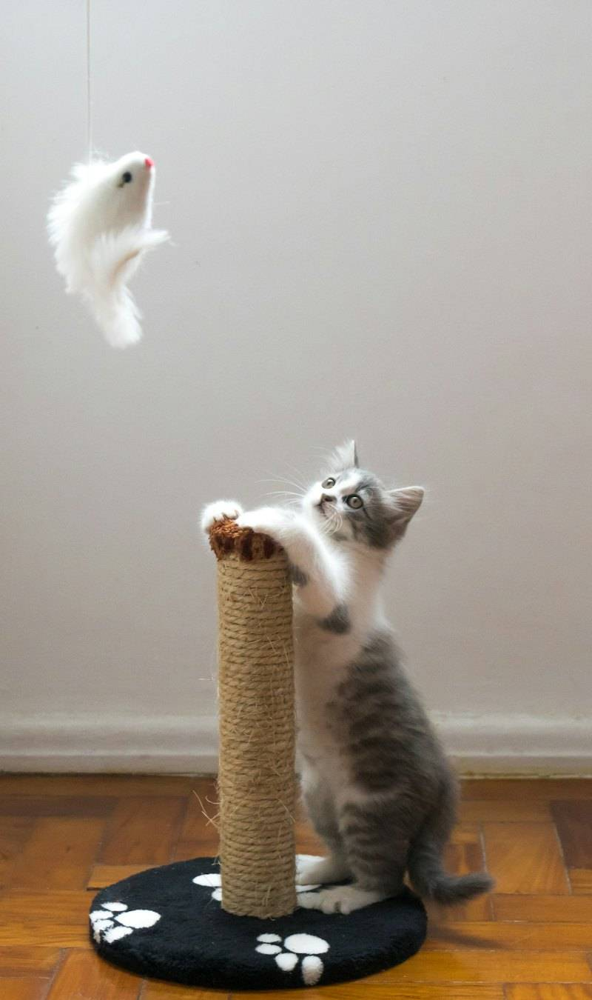
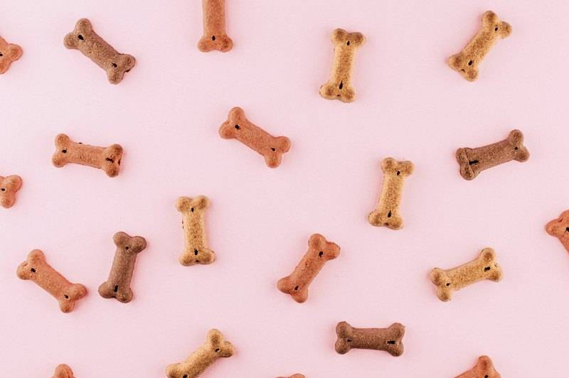
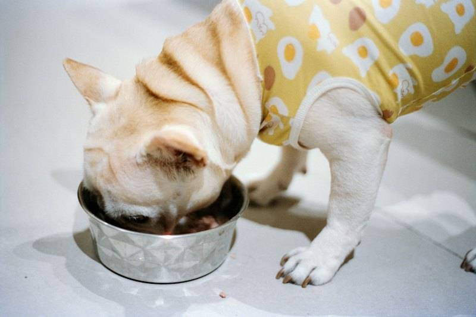

Otevřeno
- Pondělí8:00–13:00, 13:45–17:45
- Úterý8:00–13:00, 13:45–17:45
- Středa8:00–13:00, 13:45–17:45
- Čtvrtek8:00–13:00, 13:45–17:45
- Pátek8:00–13:00, 13:45–17:45
- Sobota9:00–14:00
- Neděle9:00–14:00
Ve státní svátky se otevírací doba může lišit.
Co u nás koupíte
Krmivo
Granulepsi i kočky
Kapsičkypsi i kočky
Konzervypsi i kočky
Pamlskypsi i kočky
Doma
Pelechypsi i kočky
Toaletykočky
Podestýlkykočky
Škrabadlakočky
Ven a na cesty
Taškypsi i kočky
Oblečenípsi





Značky, které vedeme
- Acana
- Orijen
- Brit Care
- Hill's
- Josera
- K9
- Magnusson Original
- EssentialFoods
A další. Když hledáte konkrétní krmivo, napište nám nebo zavolejte, než se vydáte na cestu.
Jak k nám
Najdete nás na třídě 17. listopadu v Ráji, hned u Lidlu a kousek od nonstop Tesca.
tř. 17. listopadu 873/6
734 01 Karviná-Ráj
Máte to skladem?
Napište, jaké krmivo nebo potřeby sháníte. Otevře se Vám e-mail, který stačí odeslat, a my odpovíme.